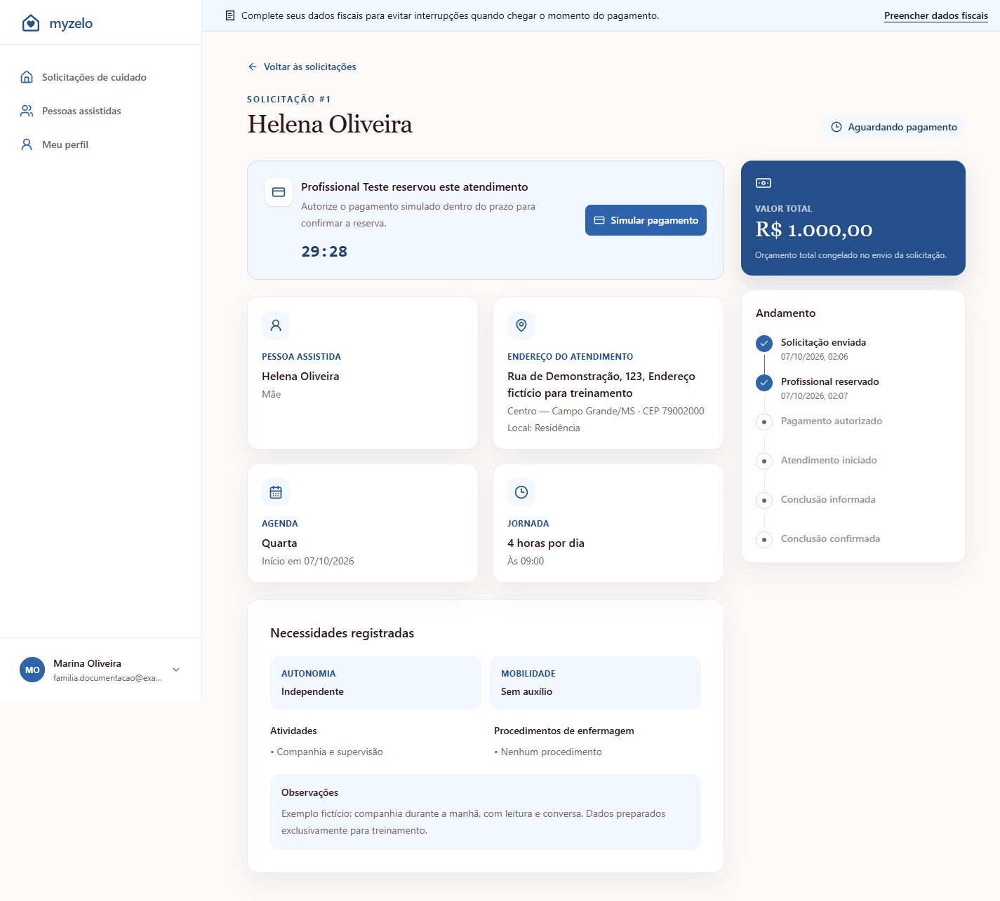
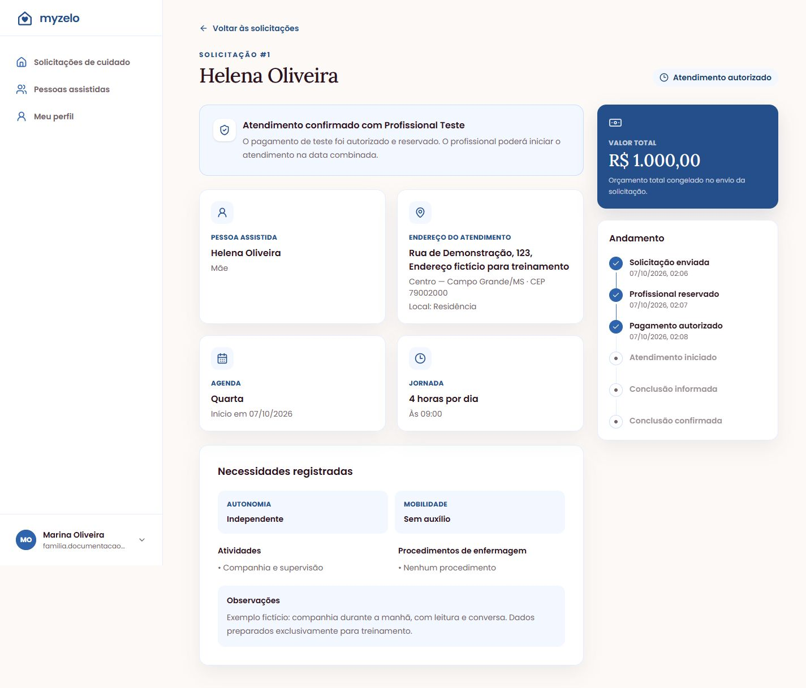

Pagamento e atendimento
Reserva e pagamento simulado
Entenda a reserva e autorize o pagamento de teste dentro do prazo.
Quando um profissional aceita
Após o envio, a solicitação fica em Buscando profissional. Quando um profissional aceita, passa para Aguardando pagamento. A tela identifica quem reservou o atendimento e mostra uma contagem regressiva.


Autorizar o pagamento de teste
- Abra os detalhes da solicitação em Aguardando pagamento.
- Clique em Simular pagamento.
- Confira o profissional, a solicitação e o valor total. A tela informa Nenhuma cobrança real será realizada.
- Se aparecer a pendência fiscal, use Preencher dados fiscais, salve o cadastro e volte à solicitação.
- Enquanto a reserva estiver válida, clique em Autorizar pagamento de teste.
- Confira a mudança para Atendimento autorizado.

O que esta simulação significa
O botão registra a autorização de teste e permite o avanço do atendimento. O valor vem do orçamento aceito no envio. Você não está pagando por cartão ou realizando uma cobrança no Stripe nesta versão.


Resultado esperado
A solicitação passa para Atendimento autorizado e aguarda o início informado pelo profissional.
Regras que você precisa conhecer
- Dados fiscais incompletos impedem a autorização.
- O prazo expirado ou uma solicitação fora de Aguardando pagamento impede nova autorização por essa tela.
- O valor de R$ 1.000,00 usado no exemplo é temporário; não representa tabela comercial.
- O fluxo atual não efetua cobrança real, repasse ou emissão de nota fiscal.